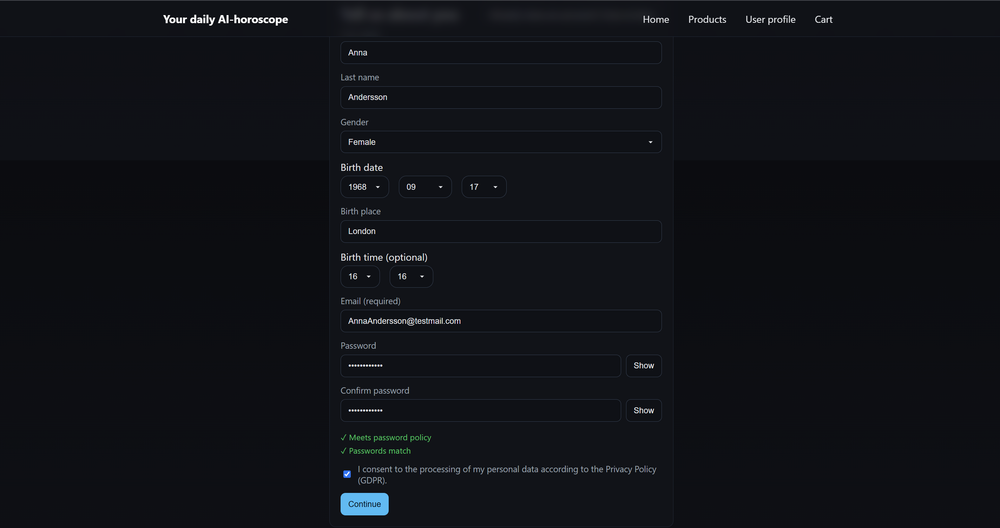
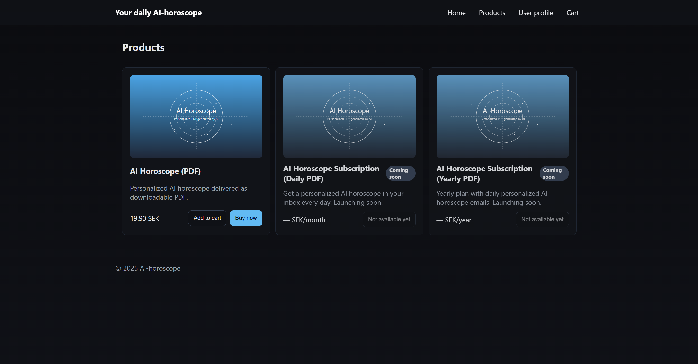
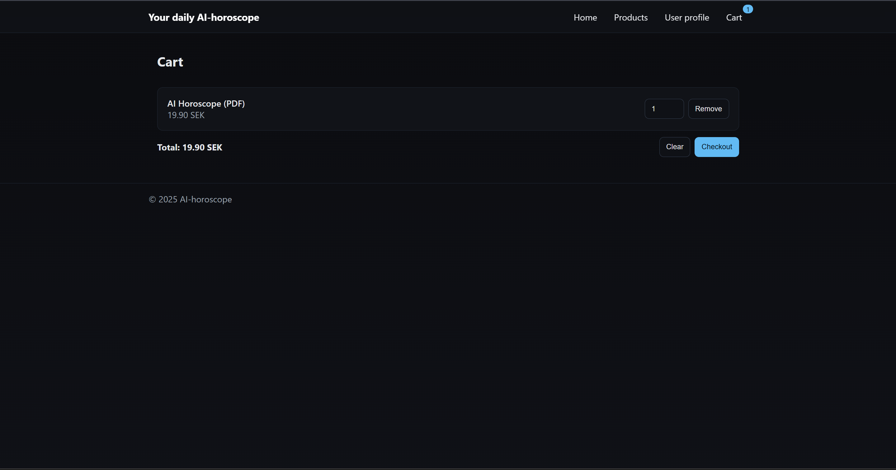
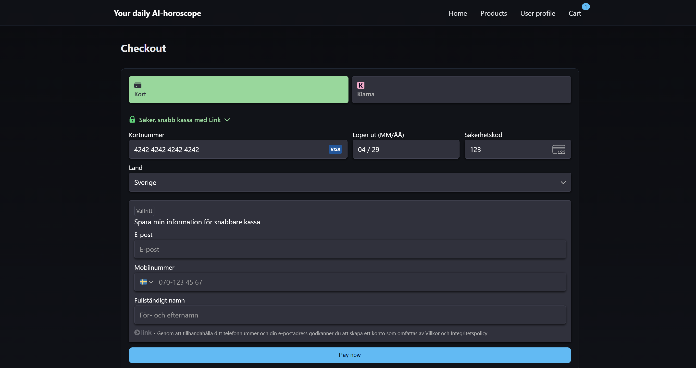
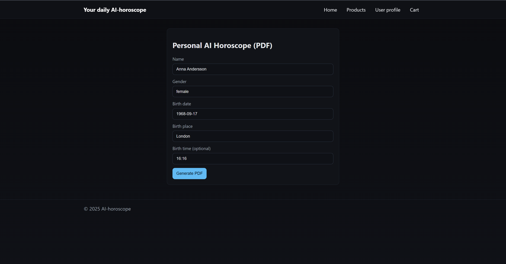
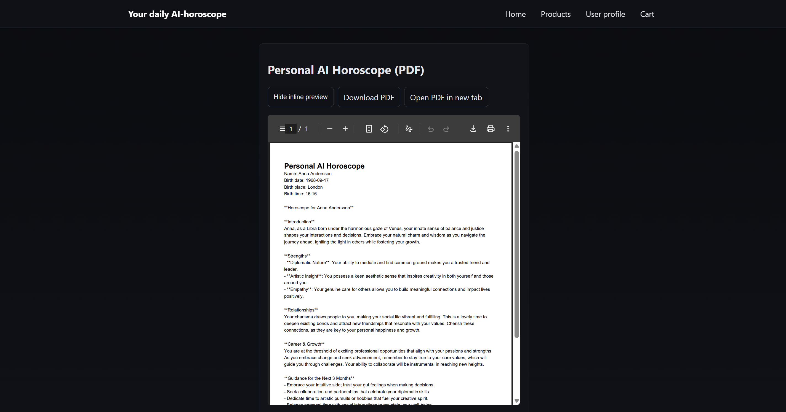
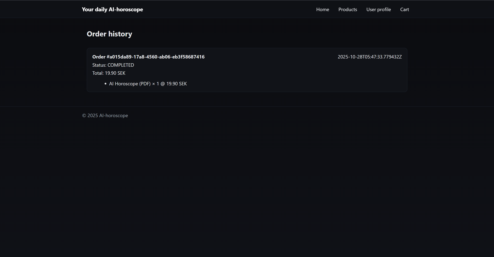

En modulär e-handelsplattform byggd med mikroservice-arkitektur där varje tjänst är oberoende och kan skalas individuellt.
Systemet hanterar produkter, ordrar, användare och betalningar genom separata services som kommunicerar via REST API:er.
Inkluderar även AI-genererade horoskop som digital produkt med PDF-generering.
Arkitektur: Mikroservices med tre oberoende backend-tjänster (User, Product, Order)
Autentisering: JWT-baserad autentisering med centraliserad user-service
Deployment: Docker Compose för lokal utveckling, Docker Hub för image-distribution
Testning: JUnit 5 med JaCoCo-täckningsrapporter för varje microservice
Arkitektur & integrationer
Projektet följer mikroservice-principerna där varje tjänst har sitt eget ansvarsområde och databas.
Services kommunicerar via REST API:er och kan deployas och skalas oberoende av varandra.
User Service: Hanterar registrering, inloggning, JWT-tokens och användarrättigheter
Product Service: Produktkatalog med CRUD-operationer, bildhantering och lagerhantering
Order Service: Orderhantering, betalningar via Stripe och AI-genererade horoskop
Frontend: React SPA med Vite, serveras via Nginx i Docker
OpenAPI/Swagger: Automatisk API-dokumentation för alla backend-services
Stripe Integration: Payment Intents API för säkra betalningar och webhook-hantering
OpenAI/1min.ai: AI-generering av personliga horoskop baserat på användardata
OpenPDF: Genererar PDF-dokument för digitala produkter (horoskop)
Spring Actuator: Health checks och metrics för varje service
Skärmbilder

1. Registrering där användare anger personliga uppgifter för att skapa ett konto och blir automatiskt inloggad.

2. Produktgalleri med köpknappar och prisinformation.

3. Varukorg som visar valda produkter, antal och totalbelopp.

4. Stripe-checkout med kortbetalning och Klarna som alternativ.

5. AI-flöde där kundens uppgifter skickas för produktgenerering.

6. Levererat horoskop med inline PDF-visning och nedladdningsval.

7. Orderhistorik med status, totalsumma och artikelinformation.
Nyckelfunktioner
Användarhantering: Registrering, inloggning, profilhantering och aktivitetsloggning
Produktkatalog: Skapa, redigera och ta bort produkter med bilduppladdning och kategorisering
Lagerhantering: Realtidsuppdatering av lagersaldo med reservation vid köp
Orderhantering: Komplett orderflöde från varukorg till bekräftelse med orderhistorik
Stripe-betalningar: Säkra kortbetalningar med Payment Intents och webhook-validering
Entitlement-system: Hantering av digitala rättigheter och konsumerbara produkter
AI-horoskop: Personliga horoskop genererade med OpenAI och levererade som PDF
Analytics: Orderstatistik och försäljningsdata för administratörer
Service-to-service kommunikation: Order Service anropar User och Product Services för validering
Mikroservice-arkitektur
Varje service är helt oberoende med egen databas (H2 för utveckling) och kan deployas separat.
Detta ger flexibilitet att skala specifika delar av systemet baserat på belastning.
Separation of Concerns: Varje service har ett tydligt ansvarsområde utan överlappning
Oberoende deployment: Services kan uppdateras utan att påverka andra delar av systemet
Skalbarhet: Individuell skalning av services baserat på behov (t.ex. fler Product Service-instanser)
Resiliens: Om en service går ner påverkas inte nödvändigtvis hela systemet
Docker Compose: Enkel lokal utvecklingsmiljö med alla services och nätverk konfigurerade
Versionshantering: Varje service har sitt eget Git-repository som submodule
Lärdomar
Detta projekt har gett djup förståelse för mikroservice-arkitektur och de utmaningar som kommer med distribuerade system.
Att designa API-kontrakt mellan services, hantera service-to-service-kommunikation och säkerställa datakonsistens över
tjänstgränser kräver noggrann planering. Implementationen av JWT-baserad autentisering som delas mellan alla services
lärde mig vikten av centraliserad användarhantering och säker token-validering.
Att arbeta med Stripe webhooks lärde mig vikten av idempotens och säker webhook-validering för att undvika dubbelbetalningar.
Docker Compose-konfigurationen gjorde det möjligt att köra hela systemet lokalt
med realistiska nätverksförhållanden, vilket påskyndade utvecklingen avsevärt.